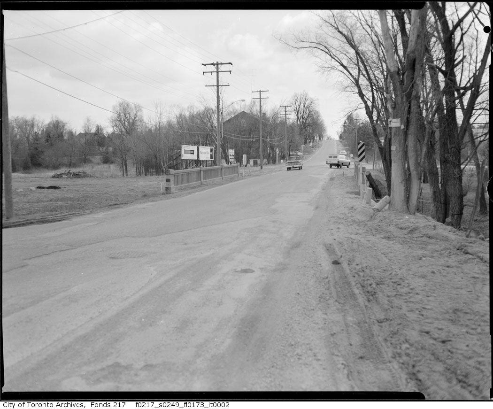

Bayview & Steeles - Then and Now
Last Updated: April 5th 2016
This blog contains before and after photos of the Bayview & Steeles intersections located on the border of Toronto and Markham. Most of the before photos are from the 1950's/1960's and made available by the Toronto Public Library and the Toronto Archives. The after shots are taken by me.
If you have any additions pictures, find something wrong with my article, have something to add or to ask please feel free to contact me using the email on the "About Aaron Gavendo" page.
|
These photos are taken from Bayview Avenue on the southwest side looking northeast. When I went to take the after photo I realized the driveway seen in the bottom left corner is the driveway to the building that is now the Zoroastrian Society of Ontario. In the distance in the 1956 photo you can see the Benjamin Fish Gristmill. The mill stood from 1832 until it was demolished in 1965. There is now a gas station and mechanic shop where it once stood. On the right in the southeast corner you can see that the area used to be clear and is now very wooded and hard to see through in the 2016 photo. | |
| Before (July 1956) | After (March 2016) |
 |
|
|
The below photos were taken from the southeast corner looking north. In the 1955 shot you can see the gristmill again. There is an area which looks like a parking lot on the southeast corner of the intersection, so far I'm not sure what it was used for. The third photo is taken north of the bridge looking southeast. All that is left is a gate. Aerial photographs taken by the city of Toronto and viewable at the City of Toronto website show that between 1953 and 1955 this area changed from the parking lot you see below to just a driveway to a house. I think the house is the white one at the far right, although it might have not even been built by 1955. This area did not change much until the mid 1970's when The Gates of Bayview apartment complex was built. Other than the trees growing in, it has been the same since the 1970's. | |
| Before (1955) | |
| After (March 2016) | Entrance to "parking lot" |
| In this before and after the photographer is standing on the southeast corner just north of the bridge looking south. The trees in the after photo seem to be planted close to the road in an unnatural pattern to block the view to what's behind it. Although there does not seem to be much behind it besides empty space and shrubs. The Gates of Bayview apartment complex is quite far away and up a hill. | |
| Before (1955) | After (March 2016) |
| This one is a little hard to recognize because it does not show any key landmarks such as the bridge or the mill. These photos are taken from the south east corner of the intersection and the photographer is facing west. | |
| Before (1956) | After (March 2016) |
| These photos were taken from the southwest corner looking east. | |
| Before (1963) | After (March 2016) |
|  | |
| Using aerial photographs I'm guessing that the grist mill stood on this grassy patch with trees between the gas station and mechanics. | |
| Before (1956) | After (March 2016) |
| It's important to note (if you have not noticed already) that Bayview north of Steeles and Bayview South of Steeles did not always meet each other at Steeles Avenue. During the mid 1960's construction joined these two roads together. Below are before and after aerial shots that show how a new section of road was built so drivers would not have to turn onto Steeles to continue up Bayview. Roads were also widened and paved. The original Bayview avenue that is just north of Steeles has been turned in to a bus loop for the TTC 11 bus. | |
| 1963 | 1967 |
| These photos were taken from the northeast corner looking south. The 1963 photo is during construction and it's really hard to tell what's what during the roads modernization. | |
| Before (1965) | After (March 2016) |
| The road seems to be being paved. These pictures were taken on the north side of Steeles at Old English lane facing towards Bayview. | |
| Before (1964) | After (March 2016) |
 |
|
|
Finally let's take a look at an aerial view from 1947 and the Google maps view today. | |
| Before (1964) | After (March 2016) |
|
1: Benjamin Fish gristmill (and site), 2: Zoroastrian Society of Ontario building, 3: Bayview Avenue / TTC Bus Loop, 4: Parking lot? 5:The Gates of Bayview appartment complex, 6: Bayview Glen Church | |